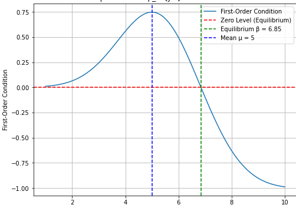

Analysis of Supply Information, Code Bidding, and Efficiency in Repetitive Simultaneous Ascending Online Auctions: A Study of India's eNAM Digital Agricultural Market
Theorem 2, the equilibrium bidding-range result, is formalized and machine-checked in Lean 4 with mathlib4 in the artifact file CodeBidding.lean.
Abstract
This paper analyzes a Repetitive Simultaneous Ascending Auction (RSAA) mechanism employed in India's eNAM digital agricultural market. RSAA is characterized by full seasonal supply transparency and a strategic seller option to reject equilibrium bids. We develop a model of the RSAA game with inter-round strategic dependence and endogenous seller entry, and we find conditions for collusion formation. Using transaction-level data, we empirically validate the emergence of code bidding, a tacit collusive strategy sustained by low bidder concentration and shared supply information. The results show that demand-side coordination systematically reduces price competition. Moreover, the coexistence of supply transparency and strategic rejection introduces significant allocative inefficiencies despite the ascending-price format. These findings offer novel insights for auctions and market design, particularly concerning collusion vulnerability and efficiency in agricultural and digital commodity markets.
Problem
India's eNAM digital agricultural market uses a Repetitive Simultaneous Ascending Auction (RSAA). It combines full seasonal supply transparency with a seller option to reject the standing bid. The question is how this design affects bidding incentives, collusion such as code bidding, and allocative efficiency.
Approach
The authors model the RSAA as a dynamic extensive-form game with imperfect information, inter-round strategic dependence and endogenous seller re-entry through rejection. They derive equilibrium bidding bounds from the bidder's expected-utility objective and its first-order and KKT conditions. The key theorem is machine-checked in Lean 4 with mathlib4, with Gaussian cdf/pdf primitives assumed as axioms or imported. Transaction-level eNAM data from two West Bengal markets is used to test empirically for code bidding.

Figure 1 : Equilibrium for (\beta_{i}^{jm}) with mean line. The dotted lines represent discrete utility values u(v_{i}) for selected values in the support of G_{i} ; the solid line shows the convexified utility function u_{\text{conv}}(v_{i}) .
Results
Bidder participation is low, with about 2–3 bids per auction across commodities, which is consistent with tacit collusion through code bidding that reduces price competition. Supply transparency combined with strategic rejection creates allocative inefficiencies despite the ascending-price format.